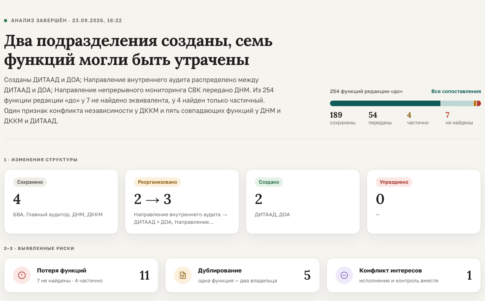

Мобильный режим: слайды идут подряд. Полный вид — на широком экране.
ИИ-агент сравнивает документы «до» и «после» и подтверждает каждый вывод цитатой из источника.
Ценность · какую проблему решаем
redakciya_8.pdf
Положение о внутреннем аудите, ред. 8
redakciya_9.pdf
Положение о внутреннем аудите, ред. 9
обязанность из старой редакции не получила владельца в новой
одна обязанность закреплена за двумя подразделениями
подразделение выполняет работу и само контролирует её качество
Ценность · решение и польза

полный анализ контрольной пары: два положения по 25 страниц
созданные, реорганизованные, сохранённые и упразднённые подразделения
потери, дублирования, конфликты интересов: документ, пункт, дословная цитата
рекомендации принять или отклонить, сверка с законами РК, DOCX и PDF
Результат и техническая реализация
Word, PDF и Excel режутся на пункты с адресом: страница, строка, ячейка
подразделения «до» и «после» сравниваются; преемников оценивает модель
обязанности размечаются по пунктам: исполнитель, суть, категория
кандидатов подбирает код, решает модель-судья; риски считает код; нормы из действующих актов
собирает код только из проверенных выводов
Контрольная пара: находится в каждом контрольном запуске
Docker Compose · Caddy · Node 22 + Express · Vue 3 · Python 3.12 + FastAPI · MongoDB 8 · OpenAI-совместимый API · smoke.sh: 36 HTTP-проверок · запуск с чистого клона
Инновационность · чем отличаемся
| Ручная сверка | Запрос к чат-модели | OrgScope | |
|---|---|---|---|
| Источник вывода | есть, но после часов работы | часто нет, бывает выдуман | пункт и цитата, проверены кодом |
| Числа | считает человек | модель, без гарантии | код, воспроизводимо |
| Закон | отдельная работа юриста | по памяти модели | только действующие акты с adilet.zan.kz |
| Данные | в компании | у внешнего сервиса | в контуре: Docker, любой совместимый API |
Потенциал развития и масштабирования
положения «до» и «после» реорганизации
работает сегодняинструкция ↔ положение о подразделении
новый промпт разметкиструктуры двух компаний в одну
новый промпт разметкивнутренние документы против актов РК
расширить корпус актовредакция N ↔ редакция N+1, обязательства
новый промпт разметкиположения о ведомствах и фондах
другой корпус актовсопоставление, подсчёт и проверка цитат не зависят от области; API анализа открыт для интеграции
одна команда docker compose; любая OpenAI-совместимая модель
OCR и старый .doc · все действующие акты РК · пилот на реальных документах одной компании